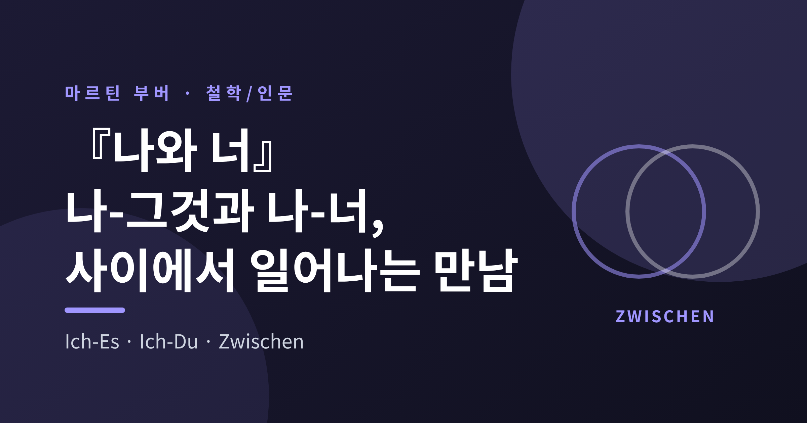
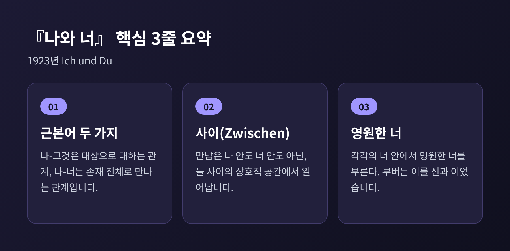
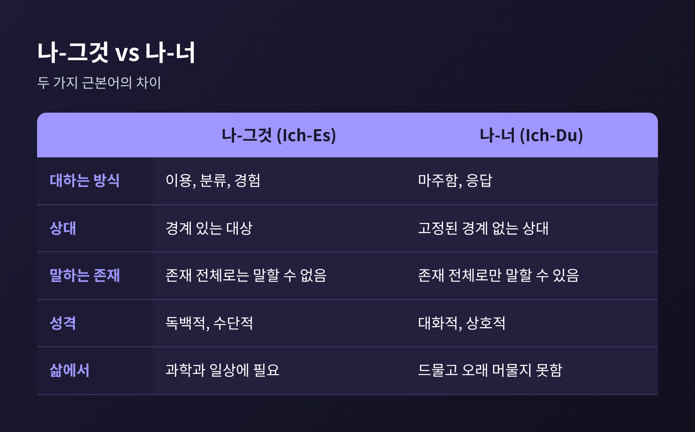

[철학/인문] 마르틴 부버 『나와 너』 — 만남의 철학이 오늘의 인간관계에 던지는 질문
오늘은 마르틴 부버의 『나와 너』를 정리해 보려 합니다. 핵심은 하나입니다. 사람이 세계와 맺는 관계는 '나-그것'과 '나-너' 두 가지 근본어로 나뉘고, 참된 삶은 후자의 만남에서 일어난다는 것입니다. 개념의 뜻, 그것이 놓인 대화 철학의 맥락, 받아온 비판, 그리고 오늘의 인간관계에 던지는 질문 순서로 살펴보겠습니다.

마르틴 부버는 1878년 빈에서 태어나 1965년 예루살렘에서 세상을 떠난 유대계 사상가입니다. 철학자나 신학자라는 이름보다 관계를 다루는 사람으로 불리기를 바랐다고 전해집니다.
『나와 너』(독일어 원제 Ich und Du)는 1923년 라이프치히의 인젤 출판사에서 나왔습니다. 스탠퍼드 철학백과는 이 책을 "짧은 철학적 에세이"로 소개합니다. 원래는 종교현상학 서설로 구상한 다섯 권짜리 기획의 일부였는데, 그 기획은 끝내 접었다고 합니다.
영어 번역은 두 가지가 알려져 있습니다. 1937년 로널드 그레고르 스미스의 번역, 1970년 월터 카우프만의 번역입니다. 독일어 'Du'는 가까운 사이에서 쓰는 "너"입니다. 고어풍의 'Thou'보다 카우프만의 'You'가 원문의 결에 가깝다는 설명이 있습니다.
부버는 이 책에서 '근본어(Urworte)'를 말합니다. 근본어는 사물이 아니라 관계를 가리키는 말이며, 나-그것(Ich-Es)과 나-너(Ich-Du) 두 짝이 있습니다.
독립된 '나'는 없다는 것이 출발점입니다. 오직 나-너의 '나'와 나-그것의 '나'가 있을 뿐이라는 문장이 책의 뼈대를 이룹니다. 나-너의 나와 나-그것의 나는 서로 다른 존재 방식입니다.
나-그것은 세계를 경계가 있는 대상으로 대하는 태도입니다. 이용하고, 분류하고, 경험하는 관계입니다. 인터넷 철학백과(IEP)는 이 관계가 같음과 다름의 범주로 타자를 정의하려 하기에 상대가 분류 가능한 대상이 된다고 풀어 줍니다.
나-너는 다릅니다. 고정된 경계가 없고, 무언가를 얻기 위한 수단도 아닙니다. 존재 전체로만 말할 수 있는 근본어라고 부버는 말합니다. 반대로 나-그것은 존재 전체로 결코 말할 수 없다고 합니다.
대표 예시가 나무입니다. 나무를 미적으로 바라보고, 성장을 느끼고, 종류로 분류하고, 법칙의 표현으로 읽고, 수학으로 풀어도 나무는 여전히 대상으로 남습니다. 나-너의 관계는 사람에게만 열려 있지 않다는 뜻이기도 합니다. 나무도 하늘도 공원 벤치도 '너'가 될 수 있다고 정리되어 있습니다.

여기서 흔한 오해를 하나 짚어 둡니다. 부버는 나-그것을 악으로 규정하지 않았습니다. 과학과 일상은 나-그것 없이 돌아가지 않습니다. 문제는 나-그것만으로 사는 일입니다. 그것의 세계에서만 사는 것은 가능하지만 온전한 인간의 삶은 아니라고, 해설자 프리드먼은 부버의 생각을 풀어 줍니다.
만남은 '나' 안에서도 '너' 안에서도 일어나지 않습니다. 스탠퍼드 철학백과는 주체와 타자의 '사이'에 놓인 공간이 상호적이고, 거기서 현존이 드러난다고 설명합니다. IEP도 나-너의 두 참여자가 중심이 '사이'에 있는 관계의 양극으로 존재한다고 정리합니다. '사이(Zwischen)'라는 용어 자체는 스탠퍼드 철학백과가 길게 전개하지 않으므로, 이 글은 IEP와 해설서의 설명을 따랐습니다.
이 사이는 유지되기 어렵습니다. 부버는 모든 '너'가 우리 세계에서 결국 '그것'이 되어야만 한다고 썼습니다. 어제 깊이 만난 친구도 오늘은 '내가 아는 그 사람'이라는 설명으로 굳어집니다. 모리스 프리드먼은 『마르틴 부버: 대화의 삶』에서 모든 너가 다음 순간 그것이 될 수 있고, 계속 그렇게 되어야만 한다고 풀었습니다. 만남은 지속하는 상태가 아니라 되풀이해서 일어나는 사건에 가깝습니다.
'영원한 너'는 이 관계의 끝에 놓인 자리입니다. 프리드먼이 인용하는 문장은 이렇습니다. 각각의 너 안에서 우리는 영원한 너를 부른다는 것입니다. 부버는 이를 신과 이어서 말했고, 대화 공동체는 공통의 중심인 영원한 너와 관계해야 한다고 보았습니다. 다만 스탠퍼드 철학백과는 이 어구 대신 '신적 너'라는 표현을 쓰므로, 용어는 소개하는 자료마다 다릅니다.
부버의 사상은 대화(Dialogue) 철학이라는 이름으로 이어집니다. 한 학술 논문은 부버의 대화를 세 가지로 나눕니다.
진정한 대화는 직접성, 상호성, 진실성, 평등으로 특징지어집니다. 말이 필수도 아닙니다. 침묵을 함께 나누는 일도 대화이며, 중요한 것은 말하기보다 내면의 경청이라고 합니다.
기술적 대화는 객관적 이해와 이익을 위한 대화입니다. 부버는 이를 '영혼 없는 대화'라 불렀습니다. 규칙과 목표가 있고, 성과로 평가되며, 우정이 아니라 협력을 낳습니다.
독백은 대화의 모양을 한 혼잣말입니다. 자기를 확인하려는 욕구에서 나오고, 상대는 자기를 보여 주는 무대로 쓰입니다. 선입견과 고정된 기대가 대화를 막는다는 지적도 이어집니다.
여기서 관계의 시험지가 하나 생깁니다. 지금 나는 상대의 말을 듣고 있는가, 아니면 내가 할 말을 고르고 있는가 하는 질문입니다. 예전에는 대화를 말솜씨의 문제로 보았다면, 부버의 틀에서는 듣는 태도의 문제가 됩니다.
배경에는 하시디즘이 있습니다. 부버는 1906년 『랍비 나흐만 이야기』, 1908년 『바알 셈 전설』로 하시디즘 설화를 다시 들려주었습니다. 위키백과는 이를 일상의 의미와 공동체를 강조하는 흐름으로 소개합니다. 한편 REP 요약은 초기에 신비주의에 끌렸던 그가 신비적 합일을 관계의 궁극으로 보는 시각을 버렸다고 정리합니다.
부버의 철학은 감동을 주지만 비판도 만만치 않습니다.
첫째, 문체와 엄밀성입니다. 월터 카우프만은 이 책이 "정직하기보다 꾸며졌다"고 평했고, 깊은 정서의 동요를 계시로 착각했다고 비판했습니다. 부버 스스로도 영감 상태에서 쓰였음을 인정했다고 합니다. 프란츠 로젠츠바이크는 부버가 나-그것을 세워 나-너에게 '불구의 적수'를 주었다고 꼬집었습니다.
둘째, 자기 모순 논란입니다. 체르보니에는 나-너에 대한 객관적 비판은 그 자체가 나-그것에 속하므로 성립하지 않는다고 짚었습니다. 부버는 비판을 환영하며 체계가 아니라 경험을 전하려 했다고 답했습니다.
셋째, 레비나스와의 갈림길입니다. 레비나스는 부버의 나-너가 대칭적이고 윤리적으로 형식적이라고 보았습니다. '너'를 식물에게도 말할 수 있다면 윤리적 내용이 비어 있다는 것입니다. 타자의 필요가 응답보다 먼저 나를 부른다는 것이 레비나스의 생각입니다. 반대로 IEP에 따르면 부버는 레비나스가 타자를 초월적으로 만들어 자아를 다시 고독으로 되돌린다고 보았습니다. 어느 쪽이 옳은지는 지금도 열린 논쟁입니다.
넷째, 학문적 한계입니다. 게르숌 숄렘은 부버가 하시디즘 자료를 자기 실존주의 견해에 맞게 골랐다고 비판했습니다. 나-너를 앞세우는 태도가 철학적·과학적 지식을 낮춘다는 지적도 있습니다.
이 비판들은 부버가 틀렸다는 선언이라기보다, 이 철학을 어디까지 쓸 수 있는지를 알려 주는 경계표에 가깝습니다.
『나와 너』를 실생활에 옮긴 대표 사례가 1957년 칼 로저스와의 대담입니다. 로저스는 자신의 내담자 중심 치료를 나-너에 견주었습니다. 부버는 치료사와 내담자의 처지가 같지 않다는 점을 들어 부분적으로 이견을 보였습니다. 한 칼럼은 부버가 상담자와 내담자, 부모와 자녀, 교사와 학생의 관계를 본질적으로 비대칭으로 보았고, 그래서 더 많은 배려가 필요하다고 했다고 전합니다. 다만 순간적이고 상호적인 연결의 가능성은 서로 인정했다고 알려져 있습니다.
일터와 학교에서는 어떨까요. 사람을 직책, 성과, 전화번호 목록의 한 줄로 부르는 순간 나-그것의 문법이 작동합니다. 필요한 일이기도 합니다. 부버가 말하려 한 것은 그것으로 대하는 일을 멈추라는 요구가 아니라, 그것만으로 사람을 끝내지 말라는 요구입니다.
디지털 환경에서는 질문이 더 커집니다. 니카 마흐니치는 『AI & Society』(2019)에서 음성비서와 소셜 플랫폼이 나-너를 도구적 나-그것으로 바꾼다고 주장했습니다. 부버가 말한 "진정한 책임은 진정한 응답이 있는 곳에만 있다"는 기준을 봇이 채우지 못한다는 것입니다. 이는 한 연구자의 논증이며 합의된 결론은 아니라는 점을 덧붙입니다. 2026년 8월 한국의 한 칼럼도 AI 시대에 사람이 데이터와 기능으로 분류되는 경향을 짚으며, 이미 안다고 생각하는 상대를 새로 만나라고 권했습니다.
정리하면 이렇습니다.
"참된 삶은 만남이다."
부버의 책이 오래 읽히는 이유는 답을 주어서가 아니라 질문을 남기기 때문이라고 생각합니다. 오늘 마주친 사람 중 단 한 사람을 '그것'이 아닌 '너'로 대한 순간이 있었는지 떠올려 보시길 권합니다. 그 물음에 선뜻 답하기 어렵다면, 아마 이 책은 이미 제 몫을 한 것입니다.